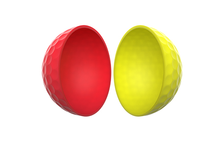
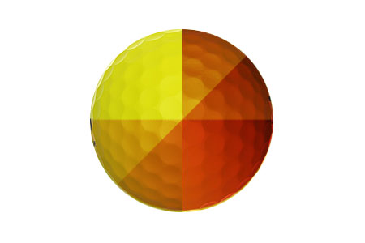
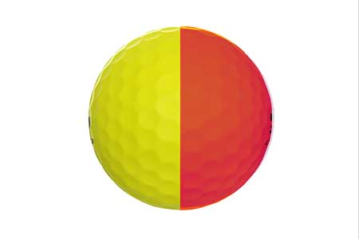
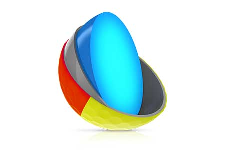
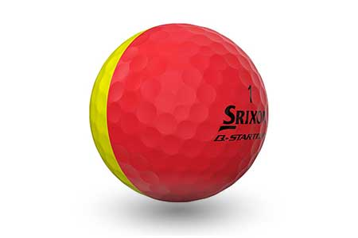

Q-STAR TOUR DIVIDE GOLF BALLS
Introducing the all-new Q-STAR TOUR DIVIDE, an exciting ball offering from Srixon that stands out on the course with its unique 50/50 matte urethane cover. But it’s more than good looks: DIVIDE boasts all the drive-boosting, chip-stopping performance of a classic Q-STAR TOUR. Plus, it makes spin visible and putting alignment easier than ever.
TECHNOLOGY
50/50 Matte Urethane Cover
Each DIVIDE cover is yellow on one half and red, blue, or orange on the other. This high contrast matte cover makes spin visible and putting alignment easy. Plus, it’s cast from soft urethane for tour-level spin and stopping power.
Spin You Can See
When it comes to pitches and chips around the green, DIVIDE’s unique two-tone cover produces a strobe effect while spinning, revealing the speed and direction of spin on each of your shots. It’s a powerful tool for tracking and improving your consistency, and you can only see it with the Q-STAR TOUR DIVIDE.
360 ̊ Alignment Line
The longer your alignment line, the easier it can be to line up your putts. And with DIVIDE’s one-of-a-kind seam line running around the entire golf ball, you get 360 ̊ of alignment so you can putt with perfect aim.
FastLayer Core
The new FastLayer Core offers distance and soft feel without compromise due to a gradual transition from soft inner core to firm outer edge.
338 Speed Dimple Pattern
Providing a penetrating ball flight in any conditions, the optimal dimple design increases lift and reduces drag to maximize distance.
Srixon q star tour divide Specs
| CONSTRUCTION | 3pc |
| COVER MATERIAL | Urethane |
| Cover Thickness | 0.020" |
| COMPRESSION | 72 |
| DIMPLE NUMBER | 338 |
AVAILABLE COLORS
Yellow / Blue, Yellow / Orange, Yellow / Red
SRIXON q star tour divide PRICE
40 € / 44 CHF / 399 SEK / 34,99 £